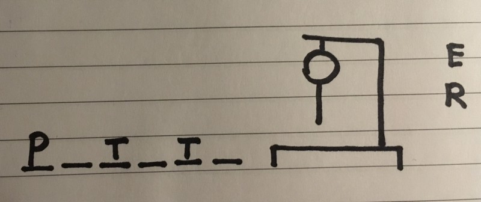
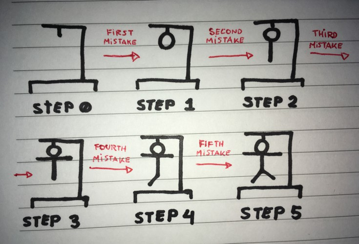

|
|
lartunet — home — computing : games & art : research — sitemap |
You've played Hangman before. The rules are simple and we all know them, but not quite. At first it may seem that there's no ambiguity in the rules of the Hangman game, but if we look deeper into them, problems start arising.
— J86I14 (JPEG) - view original (778 KiB, JPG)
This video explains the problem in great detail. It also gives each player a name that I will replicate here, as that makes things easier. The player guessing the word is called the guesser, while the player that has chosen the word will be known as the executioner.
If the video is not available or you don't want to watch it, it suffices to say that, for example, the rules don't prevent the executioner from changing the word during gameplay to make it harder for the guesser to win, nor do they state what classifies as a valid word, nor how many body parts to add to the hangman when a mistake is made. Thus, the need for an unambiguous ruleset.
I have also added a few new rules of my own to make the game more interesting for the executioner, as the base game allows for zero interaction of the player after a word has been choosen.
(1) The game requires two parties to begin. The parties may be one player each or more. If the game is played by parties of more than one player each (teams), the rules are still the same, but party members can talk between them before deciding how to proceed on their turn.
(2) Players decide among themselves (a simple game of chance like throwing a coin or rolling a dice might be used) on who's going to be the executioner and who's going to be the guesser.
(3) Both players then pick the minimum and maximum length for valid words. A valid word might not have less than 3 letters.
(4) A number between the minimum and maximum length of valid words (both ends included) is picked at random. Ways of picking the length might include throwing a dice, using a digital random number generator, throwing a coin multiple times and counting the number of heads, etc. What's important is that the resulting number is effectively random.
(5) Once the length of the word has been set, the executioner must select a letter at random. The letter must be a valid (more on this later) letter. The guesser shouldn't be able to see what letter has been chosen, but the executioner must keep the medium that gave them said letter intact to prevent cheating. For example: if a random letter app on a smartphone has been used to pick the letter, the executioner should place the phone face down on the table once the letter has been obtained so, if in doubt, the guesser can confirm that the letter the executioner claims to be the letter selected is the one actually rendered by the random letter app. Other way of picking a random letter could be to have a bag of letter cards (cardboard cards with a letter written on one side) and have the executioner put their hand into the bag, take a random card, look at it and place it face down on the table.
(6) Then the executioner picks a word that is as long as the randomly chosen word length from step (4) and includes the random letter picked in step (5) at least once. For example, if the word length is 6 and the letter is T, a valid word might be potato. The executioner writes the word on a piece of paper (without the guesser seeing it) and places it face down on the table to prevent cheating.
(7) The executioner then writes down a number of underscores to indicate the guesser how many characters long is the word. In the case of the word potato, the executioner should write _ _ _ _ _ _.
(8) The executioner then draws the gallows next to the underscores. The correct way to draw the gallows is state 0 of the picture below.
(9) The guesser picks a letter and informs it to the executioner. If the letter is in the word, the executioner writes it in the underscored position the letter would be at, every time it appears in the word. For example, if the guesser guessed the letter O, the executioner should write _ O _ _ _ O.
(10) If the letter the guesser has picked is not in the word, the executioner writes the letter next to the gallows and draws the next piece of the hangman (effectively moving to the next "state" of the hangman). The correct way to draw the hangman's body, state by state, is depicted in the picture below.
— V02S49 (JPEG) - view original (2176 KiB, JPG)
(12) If the executioner has drawn all the hangman (that is, when the hangman is the same as state 5) the game ends and the guesser losses. The letter the executioner got and the word they picked are revealed to the guesser. Once the guesser confirms that no cheating nor foul play have taken place, the executioner scores one point.
(13) If the guesser has guessed the whole word (that is, when no underscores without a letter written on them remain), the guesser wins. The letter the executioner got and the word they picked are revealed to the guesser. Once the guesser confirms that no cheating nor foul play have taken place, the guesser scores one point.
(11) Steps (7) to (10) are repeated until one of the two players scores a point.
(12) The player who was the guesser then takes the place of the executioner and vice versa. Then the game is repeated from step (4).
(13) At the end of six rounds (once evey player has been the executioner and the guesser three times), the player with the highest score wins. If both players have the same score, two more rounds are played (so that both players can be guesser and executioner once) until at the end of the rounds a player has more points than their opponent. In this scenario, once more the player with more points is declared the winner.
Valid words are words contained in a dictionary previously decided upon by both players. If no dictionary has been chosen, the following dictionaries are to be used by default:
A game of Hangman must be played in only one language, chosen by both players before the beginning of the game.
For any other languages, please send me a suggestion and I'll add it.
Letters should be any of the glyphs considered letters for the language of choice. What is and what isn't a letter varies from language to language. In multiple languages, ñ is not a letter by itself but an n with a tilde (~) on top. In Spanish, however, it is a letter by its own right and its part of the alphabet. Thus, in a Spanish game of Hangman, ñ is to be considered a valid letter.
In English, é is sometimes used (as in café). However, é is not part of the English alphabet, e is. é is just an e with a diacritic, so it's not a valid letter. If the chosen word was café, the guesser must guess the letter e to guess the é from café and any other e-s in the word. By no means should they have to pick é. Another example of English non-letters are apostrophes.
Characters like !, ?, (, ), etc, that are not part of valid words nor alphabets are, of course, not valid letters.
The wisest thing to do would be to agree beforehand with your opponent which letters you are going to consider valid. Specially if you are playing in a language that does not have an official alphabet.
If you feel the rules need further clarifications on any particular points, please let me know so I can disambiguate them further.
My rules of Hangman are released under the MIT license and may be freely reproduced, redistributed and translated.